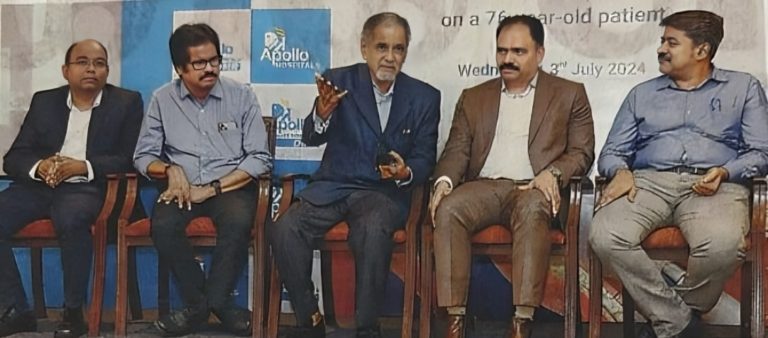
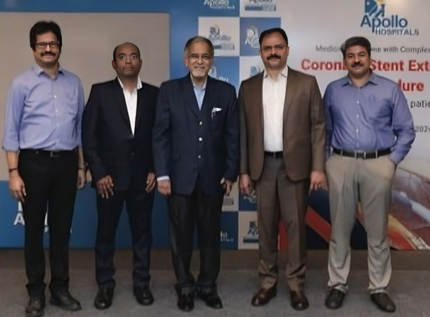
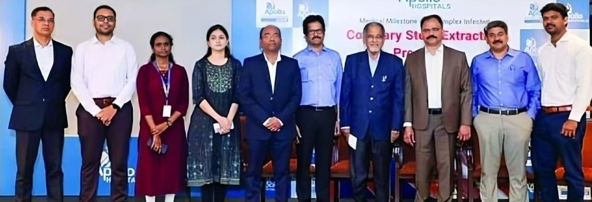
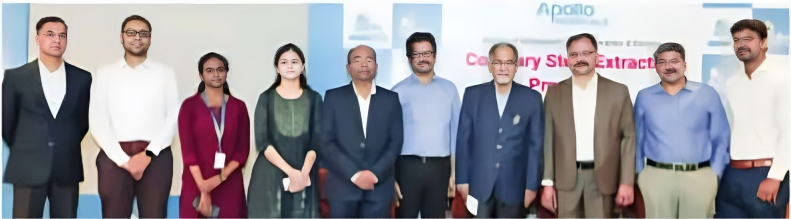

76-year-old gets infected stent removed from heart
Experiencing fever for nearly three days after under- going an angioplasty and sten- ting procedure seemed abnor mal to 76-year-old businessman Mohamed Salim 76-year-old gets infected stent removed from heart newvenusclinic.com 1 August 2024 76-year-old gets infected stent removed from heart Chennai: Experiencing fever for nearly three days after under- going an angioplasty and sten- […]

Man treated for cardiac stent infection
A 77-year-old man was re- cently treated at Apollo PerungudiHospital’s branch for a rare cardiac infection. Man treated for cardiac stent infection newvenusclinic.com 1 August 2024 The Hindu Bureau Chennai A 77-year-old man was re- cently treated at Apollo Perungudi Hospital’s branch for a rare cardiac infection. The man had re- cently undergone an emer- […]

இதய நோயாளிக்குஇன்ட்ரா கரோனரி ஸ்டென்ட் பிரித்தெடுக்கும் அறுவை சிகிச்சை
ஓஎம்ஆரில் உள்ள அப்போலோ மருத்துவமனையில் 76 வயது நோயாளிக்கு இதயத்தில் இன்ட்ரா கரோனரி ஸ்டென்ட் பிரித்தெடுத்த அறுவை சிகிச்சை குறித்த பத்திரிகையாளர் சந்திப்பு நுங்கம்பாக்கத்தில் நடந்தது. இதய நோயாளிக்குஇன்ட்ரா கரோனரி ஸ்டென்ட் பிரித்தெடுக்கும் அறுவை சிகிச்சை newvenusclinic.com 1 August 2024 இதய நோயாளிக்கு ஓஎம்ஆரில் உள்ள அப்போலோ மருத்துவமனையில் 76 வயது நோயாளிக்கு இதயத்தில் இன்ட்ரா கரோனரி ஸ்டென்ட் பிரித்தெடுத்த அறுவை சிகிச்சை குறித்த பத்திரிகையாளர் சந்திப்பு நுங்கம்பாக்கத்தில் நடந்தது. இதில், சிகிச்சை பெற்ற சலிம், […]

அப்போலோ OMR மருத்துவமனை மிகவும் சிக்கலான, இதயத்தில் பொருத்தப்பட்ட உறை குழாயை மிகத்துல்லியமாக பிரித்து எடுத்து சாதனை!
மிகவும் அரிதான மேலும் அதிக ஆபத்துள்ள நோயாளிக்கு பொருத்தப்பட்டு இருந்த இன்ட்ராகோரோனரி உறை குழாயைப் பிரித்தெடுத்து இருக்கிறது அப்போலோ மருத்துவமனை. அப்போலோ OMR மருத்துவமனை மிகவும் சிக்கலான, இதயத்தில் பொருத்தப்பட்ட உறை குழாயை மிகத்துல்லியமாக பிரித்து எடுத்து சாதனை! newvenusclinic.com 1 August 2024 சாதனை! சென்னை, சென்னை அப்போலோ OMR இன்ட்ராகோரோனரி ஸ்டென்டில் தொற்று இருப்பது மருத்துவமனை [Apollo OMR Hospital], மிகவும் அரிதான மேலும் அதிக ஆபத்துள்ள இன்ட்ராகோரோனரி உறை குழாய் பிரித்தெடுக்கும் மருத்துவ […]
जोखिम भरी बाईपास सर्जरी से 76 साल के बुजुर्ग को मिली नई जिंदगी
चेन्नई. ओएमआर स्थित एक प्राइवेट हॉस्पिटल में 76 साल के बुजुर्ग के हृदय में लगा स्टेंट निकालकर जटिल बाईपास सर्जरी कर उन्हें नया जीवनदान दिया गया। हालांकि यह हार्ट सर्जरी आम बात हो गई है, लेकिन यह सर्जरी इस मायने में महत्व रखती हैं कि मरीज बुजुर्ग है और हार्ट अटैक आने के बाद उसके […]

అపోలో ఆసుపత్రిలో అరుదైన చికిత్స
విల్లివాకం న్యూస్: చెన్నై, అపోలో ఒఎంఆర్ హాస్పిటల్, అరుదైన మరియు అధిక-రిస్క్ ఇంట్రాకోరోనరీ స్టెంట్ వెలికితీత ప్రక్రియను విజయవంతంగా నిర్వహించడం ద్వారా గుండె శస్త్రచికిత్సలో అద్భుతమైన విజయాన్ని సాధించింది. బుధవారం ఏర్పాటైన సమావేశంలో సీనియర్ కన్సల్టెంట్- మెడిసిన్, డాక్టర్ కన్నయన్, కార్డియాల జిస్ట్ డాక్టర్ మధు ప్రభుద, సలీం(రోగి), కన్సల్టెంట్ కార్డియాక్ సర్జన్ ఎం.ఎం. అపోలో ఆసుపత్రిలో అరుదైన చికిత్స newvenusclinic.com 1 August 2024 అపోలో ఆసుపత్రిలో అరుదైన చికిత్స విల్లివాకం న్యూస్: చెన్నై, అపోలో […]

உயிருக்கு அச்சுறுத்தலான ஸ்டென்ட் உபகரணம்: முதியவரைக் காத்த மருத்துவர்கள்
இதய நாளத் தில் பொருத்தப்பட்ட ஸ்டென்ட் உபகரணத்தால் தொற்று பாதிப் புக்குள்ளாகி உயிருக்கு ஆபத்தான நிலையில் இருந்த முதியவருக்கு நுட்பமாக சிகிச்சையளித்து அப் பல்லோ மருத்துவக் குழுவினர் உயிர் காத்துள்ளனர். இதுதொடர்பாக மனை நிர்வாகிகள் கூறியதாவது: உயிருக்கு அச்சுறுத்தலான ஸ்டென்ட் உபகரணம்: முதியவரைக் காத்த மருத்துவர்கள் newvenusclinic.com 1 August 2024 முதியவருக்கு நுட்பமான சிகிச்சை மூலம் மறுவாழ்வு அளித்த அப்பல்லோ மருத்துவக் குழுவினர். சென்னை, ஜூலை 3: இதய நாளத் தில் பொருத்தப்பட்ட ஸ்டென்ட் உபகரணத்தால் […]
இதய நோயாளிக்குஇன்ட்ரா கரோனரி ஸ்டென்ட் பிரித்தெடுக்கும் அறுவை சிகிச்சை
ஓஎம்ஆரில் உள்ள அப்போலோ மருத்துவமனையில் 76 வயது நோயாளிக்கு இதயத்தில் இன்ட்ரா கரோனரி ஸ்டென்ட் பிரித்தெடுத்த அறுவை சிகிச்சை குறித்த பத்திரிகையாளர் சந்திப்பு நுங்கம்பாக்கத்தில் நடந்தது. இதில், சிகிச்சை பெற்ற சலீம், இதய அறுவை சிகிச்சை மருத்துவர் யூசுப், டாக்டர்கள் கல்யாணராமன், கண்ணையன், மது பிரபுதாஸ் கலந்துகொண்டனர். இதய நோயாளிக்குஇன்ட்ரா கரோனரி ஸ்டென்ட் பிரித்தெடுக்கும் அறுவை சிகிச்சை newvenusclinic.com 1 August 2024 ஓஎம்ஆரில் உள்ள அப்போலோ மருத்துவமனையில் 76 வயது நோயாளிக்கு இதயத்தில் இன்ட்ரா கரோனரி […]
Complex Stent Extraction Performed Successfully
DOCTORS at Apollo OMR Hos- pital recently removed a stent, which led to intracoronary in- fection, from the coronary ar- tery of a 76-year-old patient with precision. It was a rare and high-risk intracoronary stent extraction procedure. Coronary stents are typically inserted to treat patients with minimal coronary artery block- ages, a common and low-risk […]